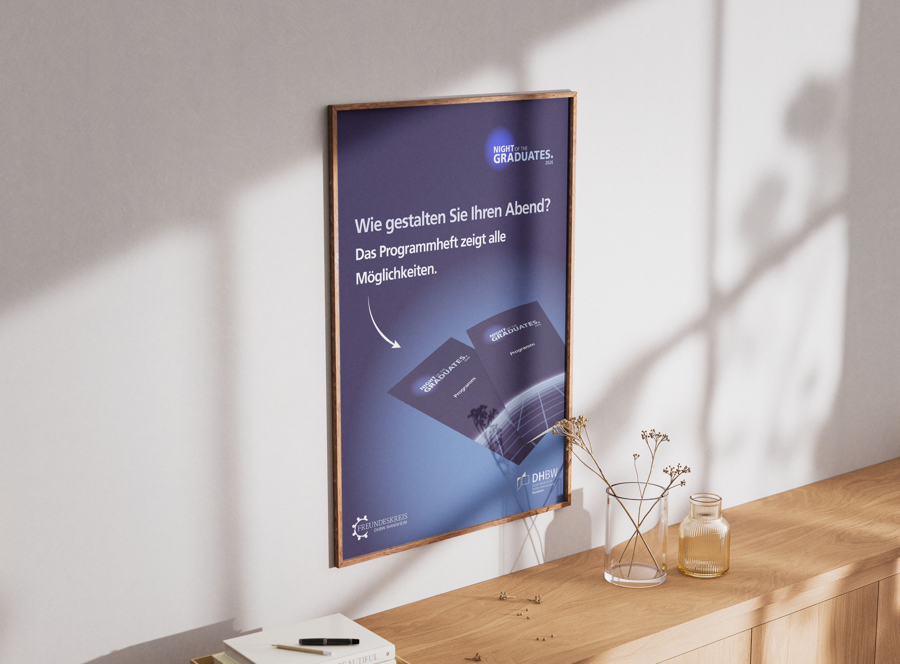
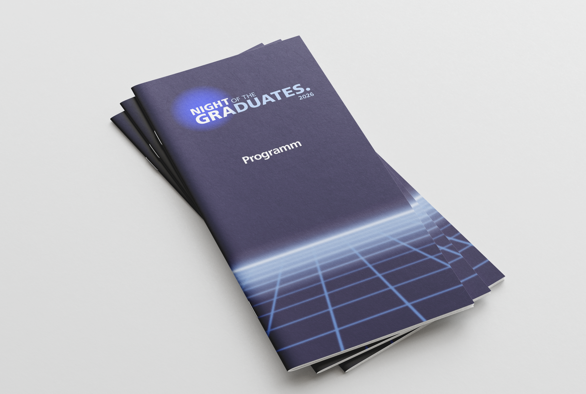
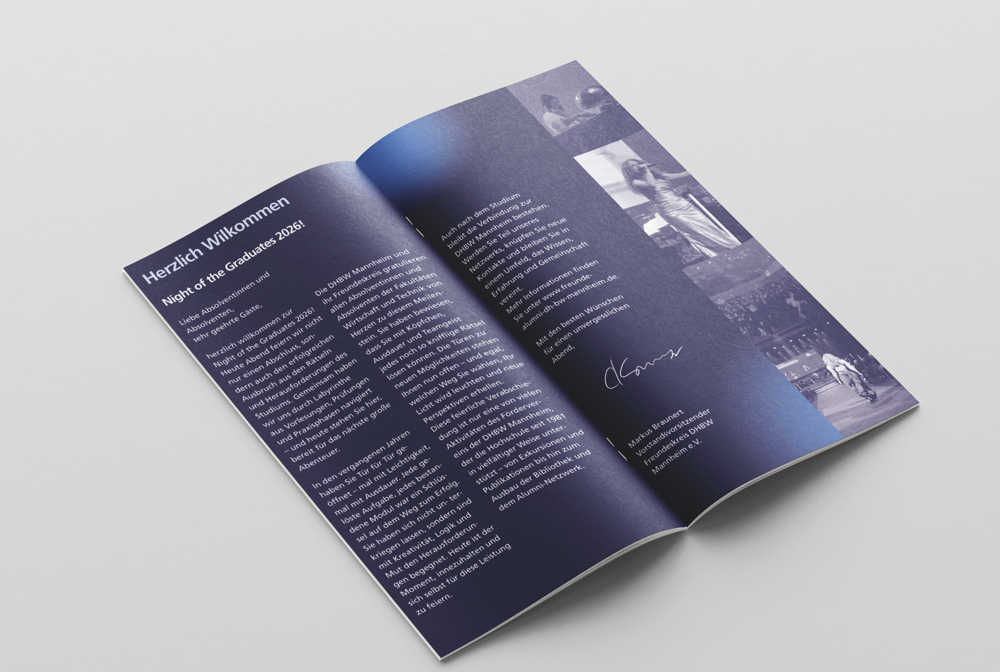
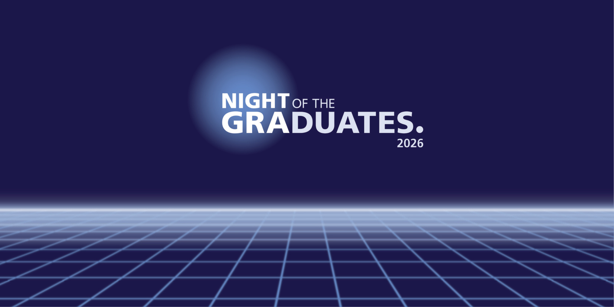
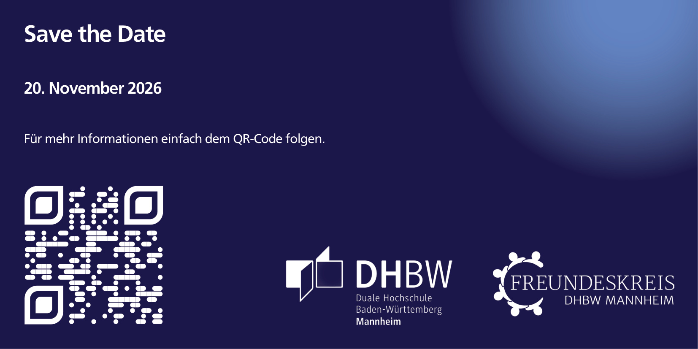

Print & digital media for the annual graduation ceremony of DHBW Mannheim — from Save the Date postcards and the program booklet to its promotional poster, all themed around Artificial Intelligence.
How will you shape your evening? ← Back to Work at DHBWThe "Night of the Graduates" (NotG) is the annual graduation ceremony of DHBW Mannheim, held at the Mannheimer Rosengarten with several thousand guests. Graduates receive their certificates, attend a festive Grand Opening with speeches, the SAP Symphony Orchestra, and enjoy live music, DJs, and walking acts across multiple stages.
The 2026 edition is themed around Artificial Intelligence, reflecting the growing significance of AI in science, industry, and society. As part of the Print & Digital Media Team (5 members), I was responsible for designing and producing key print media — working with the corporate design team's style guide, coordinating with Heidelberger Druckmaschinen for professional printing, and ensuring all media maintained a consistent visual identity.
A night shaped by Artificial Intelligence
The entire media portfolio revolves around AI — translated into a glowing network of light that runs through poster, program booklet and screens alike. The motif is woven in subtly but unmistakably, framing the evening without ever overshadowing the graduates it celebrates.
Within the Print & Digital Media Team, I focused on the poster, program booklet, and Save the Date postcards — and co-developed the typographic treatment for the event film title. My work spanned the entire production chain — from initial layout concepts through color calibration to final prepress files ready for offset printing at Heidelberger Druckmaschinen.
A key challenge was working with spot colors alongside CMYK — ensuring the AI-themed net pattern and event branding translated faithfully from screen to print. Through multiple proof rounds and on-site visits at HDM, I gained hands-on experience in professional print production and quality assurance.
Developed a new concept and layout for the program booklet poster, building on the existing design language. Optimized color values and prepared final print files.
Integrated all texts and data provided by university communications, optimized the color systems (CMYK & spot colors), and prepared the booklet for professional printing at HDM.
Technical color optimization and precise preparation of the final print data for the Save the Date postcards sent to all graduates.
A selection of the print media I designed and produced for the Night of the Graduates 2026.






From screen to print — bringing an event to life.
The Night of the Graduates project gave me a deep understanding of professional print production: working with spot colors, coordinating with Heidelberger Druckmaschinen, and ensuring every detail — from color accuracy to paper choice — serves the overall event experience. Seeing thousands of guests interact with media I helped create was an incredibly rewarding experience.
Through the agile team structure and close collaboration with the corporate design and marketing teams, I strengthened my skills in layout design, prepress workflows, and cross-functional communication — all within a real-world, high-stakes production environment.